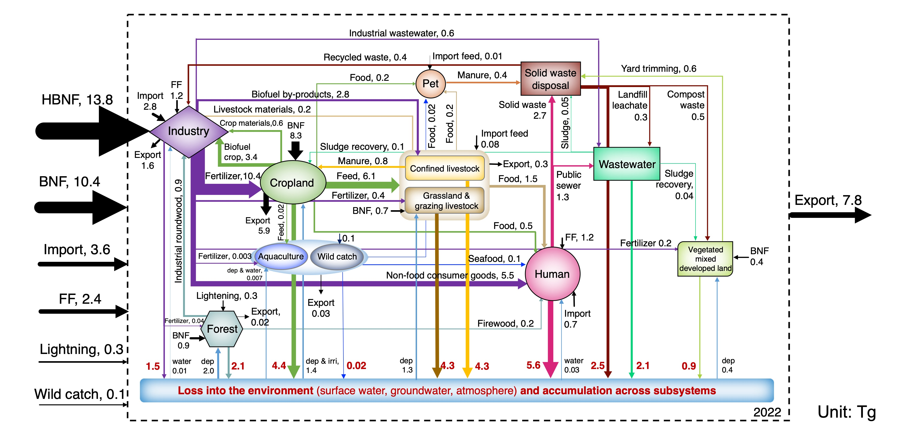

Nitrogen Cycling and Systems Analysis
Modern food systems are highly interconnected, linking agricultural production with industrial manufacturing, international trade, food consumption, wastewater treatment, solid waste management, and the natural environment. Decisions made within one sector often propagate throughout the entire system, creating feedbacks that cannot be understood by studying individual components in isolation.
My research adopts a systems perspective to quantify nitrogen flows across coupled human and natural systems. Using the Coupled Human and Natural Systems (CHANS) framework, I developed a comprehensive nitrogen budget for the contiguous United States that tracks nitrogen movement across thirteen interconnected subsystems, including cropland, livestock, forests, industry, human consumption, wastewater, solid waste, and the environment. This systems-based approach reveals where nitrogen enters the food system, how it is transformed, where it accumulates, and where it is ultimately lost to the environment.